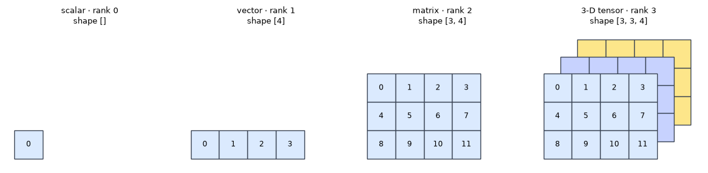
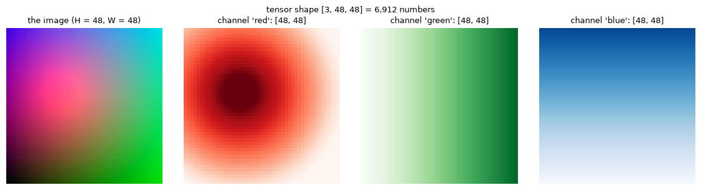
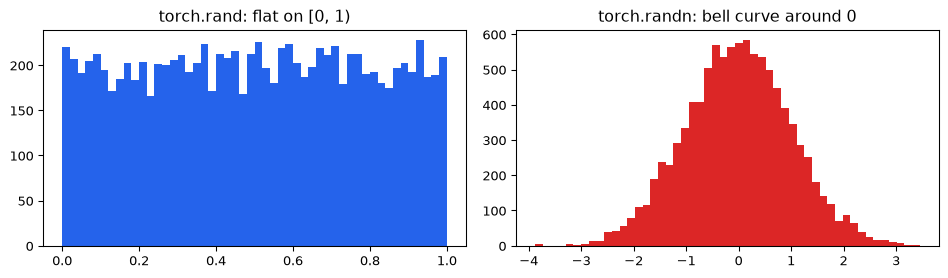
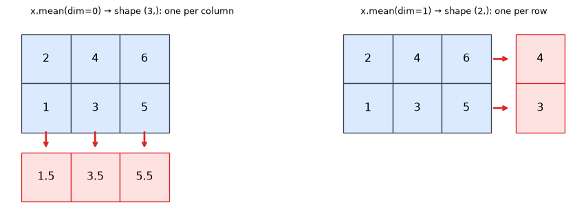
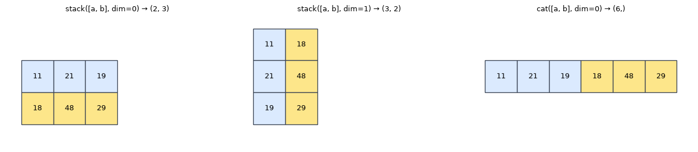
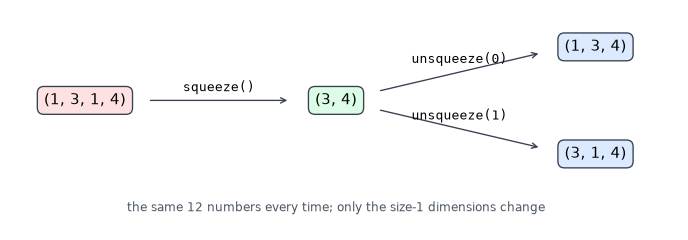

Tensors
The one data structure everything in deep learning is made of. What a tensor is, how to create one, and every operation you will use on them all the time: arithmetic, matrix multiplication, aggregation, reshaping, stacking, squeezing, indexing, datatypes. Every cell runs on a live PyTorch kernel, on the GPU when you have one.
01 What PyTorch is
PyTorch is an open-source deep learning framework, started at Meta AI (then Facebook AI Research) and now run by the PyTorch Foundation. It gives you two things:
- NumPy-like arrays that run on a GPU. The same array code runs on the CPU or, thousands of times in parallel, on an NVIDIA GPU.
- Automatic differentiation. It records the operations you do and computes gradients for you, which is all a training loop needs (note 11).
It is "define by run": the computation graph is built as your Python code executes, so you can use ordinary if, for and a debugger inside a model. It is the most used framework in deep learning research and is used in production at Meta, Microsoft, Tesla, OpenAI and many others.
02 Setup and the GPU
The project's Python environment already has PyTorch with CUDA. Import it and check the version:
import torch
import numpy as np
import matplotlib.pyplot as plt
print(f"PyTorch version: {torch.__version__}")PyTorch version: 2.11.0+cu128
Is there a GPU?
torch.cuda.is_available()isTruewhen PyTorch can see a CUDA (NVIDIA) GPU.torch.device("cuda")/torch.device("cpu")name where a tensor lives. Writingdevice = "cuda" if torch.cuda.is_available() else "cpu"once at the top lets the same code run on either.
print(f"CUDA available: {torch.cuda.is_available()}")
device = torch.device("cuda" if torch.cuda.is_available() else "cpu")
print(f"Using device: {device}")
if torch.cuda.is_available():
props = torch.cuda.get_device_properties(0)
print(f"GPU: {torch.cuda.get_device_name(0)} · {props.total_memory / 1024**3:.1f} GB · compute capability {props.major}.{props.minor}")CUDA available: True Using device: cuda GPU: NVIDIA GeForce RTX 2050 · 4.0 GB · compute capability 8.6
03 What a tensor is
A tensor is an n-dimensional array of numbers, all of one type. The number of dimensions is its rank (PyTorch calls it ndim), and the size along each dimension is its shape:
has rank n and shape (d_1, d_2, \ldots, d_n), and holds d_1 d_2 \cdots d_n numbers.
| Rank | Name | Example | Shape |
|---|---|---|---|
| 0 | scalar | a loss value, a learning rate | torch.Size([]) |
| 1 | vector | one example's features; a bias | [d] |
| 2 | matrix | a batch of feature vectors; a weight matrix | [rows, cols] |
| 3 | 3-D tensor | one colour image | [channels, height, width] |
| 4 | 4-D tensor | a batch of images | [batch, channels, height, width] |

Python code for this figure
import numpy as np
import matplotlib.pyplot as plt
from matplotlib.patches import Rectangle
fig, axes = plt.subplots(1, 4, figsize=(12, 2.9))
def grid(ax, rows, cols, x0=0, y0=0, fc="#dbeafe", vals=True):
for r in range(rows):
for c in range(cols):
ax.add_patch(Rectangle((x0 + c, y0 + rows - 1 - r), 1, 1, fc=fc, ec="#374151"))
if vals:
ax.text(x0 + c + 0.5, y0 + rows - 1 - r + 0.5, str(r * cols + c), ha="center", va="center", fontsize=9)
grid(axes[0], 1, 1); axes[0].set_title("scalar · rank 0\nshape []", fontsize=10)
grid(axes[1], 1, 4); axes[1].set_title("vector · rank 1\nshape [4]", fontsize=10)
grid(axes[2], 3, 4); axes[2].set_title("matrix · rank 2\nshape [3, 4]", fontsize=10)
for d, fc in zip(range(2, -1, -1), ["#fde68a", "#c7d2fe", "#dbeafe"]):
grid(axes[3], 3, 4, x0=d * 0.6, y0=d * 0.6, fc=fc, vals=(d == 0))
axes[3].set_title("3-D tensor · rank 3\nshape [3, 3, 4]", fontsize=10)
for ax in axes:
ax.set_aspect("equal"); ax.axis("off"); ax.autoscale_view()
ax.set_xlim(-0.3, 5.6); ax.set_ylim(-0.3, 4.6)
plt.tight_layout(); plt.show()Why everything becomes a tensor
A model only does arithmetic, so every input has to become numbers first, and tensors are the container:
- Images: a colour image is a rank-3 tensor
[channels, height, width]. A 224 × 224 RGB image is[3, 224, 224]: 3 × 224 × 224 = 150,528 numbers. A batch of 32 is[32, 3, 224, 224]. - Tables: a table with 1,000 rows and 12 columns is
[1000, 12]. - Text: a sentence becomes a sequence of token ids,
[sequence_length], then a matrix of embeddings,[sequence_length, embedding_size]. - Model parameters: the weights and biases of every layer, and their gradients, are tensors too.

Python code for this figure
import numpy as np
import matplotlib.pyplot as plt
H = W = 48
yy, xx = np.mgrid[0:H, 0:W] / H
img = np.stack([np.clip(1.2 - 1.8 * np.hypot(xx - 0.35, yy - 0.4), 0, 1), # red: a soft disc
np.clip(xx * 0.9, 0, 1), # green: a left-to-right ramp
np.clip(1 - yy, 0, 1) * 0.9]) # blue: a top-to-bottom ramp
fig, axes = plt.subplots(1, 4, figsize=(12, 3.2))
axes[0].imshow(img.transpose(1, 2, 0)); axes[0].set_title(f"the image (H = {H}, W = {W})", fontsize=10)
for ax, ch, name, cmap in zip(axes[1:], img, ["red", "green", "blue"], ["Reds", "Greens", "Blues"]):
ax.imshow(ch, cmap=cmap, vmin=0, vmax=1); ax.set_title(f"channel '{name}': [{H}, {W}]", fontsize=10)
for ax in axes: ax.axis("off")
plt.suptitle(f"tensor shape [3, {H}, {W}] = {3 * H * W:,} numbers", fontsize=10)
plt.tight_layout(); plt.show()Shapes are the thing to watch. Most errors you will hit in PyTorch are shape mismatches, and most of the operations below exist to get tensors into the shape the next operation needs.
04 Creating tensors
torch.Tensor is the class; you rarely call it directly. The four ways you will use all the time:
- From Python data:
torch.tensor([...])copies a number, list or nested list. - From NumPy:
torch.from_numpy(array)wraps a NumPy array without copying (they share memory). - Filled with a value:
torch.zeros(shape),torch.ones(shape),torch.full(shape, value). - Random:
torch.rand(shape)(uniform on [0, 1)),torch.randn(shape)(standard normal),torch.randint(low, high, shape).
A scalar
# Create a scalar tensor (0-dimensional tensor)
# Scalars contain a single numerical value and have no dimensions
# They are fundamental building blocks for more complex tensor operations
scalar = torch.tensor(7) # Create a scalar tensor with value 7
# Display the scalar tensor
print(f"Scalar tensor: {scalar}")
print(f"Scalar value: {scalar.item()}") # Extract the Python number
print(f"Data type: {scalar.dtype}") # Check the data type
print(f"Shape: {scalar.shape}") # Shape is empty for scalars
print(f"Size: {scalar.size()}") # Alternative way to check shape
# The scalar tensor object contains metadata beyond just the value:
# - dtype: The data type (default is inferred from input)
# - device: The computational device (CPU or GPU)
# - requires_grad: Whether to track gradients for automatic differentiation
scalarScalar tensor: 7 Scalar value: 7 Data type: torch.int64 Shape: torch.Size([]) Size: torch.Size([])
tensor(7)
From Python lists
# Create a simple tensors from Python data structures
# Scalar (0D tensor)
scalar_tensor = torch.tensor(7)
# Vector (1D tensor)
vector_tensor = torch.tensor([1, 2, 3, 4, 5])
# Matrix (2D tensor)
# it will be list of lists, where each inner list represents a row of the matrix
matrix_tensor = torch.tensor([[1, 2, 3], [4, 5, 6], [7, 8, 9]])
print(f"Scalar Tensor (0D): {scalar_tensor}")
print(f"Vector Tensor (1D): {vector_tensor}")
print(f"Matrix Tensor (2D): {matrix_tensor}")
# Create a 3D tensor (e.g., a batch of images with 3 color channels)
# it will be a list of matrices, where each matrix represents an image
batch_tensor = torch.tensor([[[255, 0, 0], [0, 255, 0], [0, 0, 255]],
[[255, 255, 0], [255, 0, 255], [0, 255, 255]],
[[128, 128, 128], [64, 64, 64], [32, 32, 32]]])
print("\nBatch Tensor (3D):")
print(batch_tensor, batch_tensor.shape)Scalar Tensor (0D): 7
Vector Tensor (1D): tensor([1, 2, 3, 4, 5])
Matrix Tensor (2D): tensor([[1, 2, 3],
[4, 5, 6],
[7, 8, 9]])
Batch Tensor (3D):
tensor([[[255, 0, 0],
[ 0, 255, 0],
[ 0, 0, 255]],
[[255, 255, 0],
[255, 0, 255],
[ 0, 255, 255]],
[[128, 128, 128],
[ 64, 64, 64],
[ 32, 32, 32]]]) torch.Size([3, 3, 3])From a NumPy array
torch.from_numpy does not copy: the tensor and the array are two views of the same memory, so changing one changes the other. (Use torch.tensor(array) when you want an independent copy.)
import numpy as np
import torch
# Create a NumPy array
np_array = np.array([[1, 2, 3], [4, 5, 6]])
# Create a tensor from the NumPy array
tensor_from_np = torch.from_numpy(np_array)
print("NumPy Array:")
print(np_array)
print("dtype of NumPy Array:", np_array.dtype)
print("\nTensor from NumPy Array:")
print(tensor_from_np)
print("dtype of Tensor from NumPy Array:", tensor_from_np.dtype)
# change the array: the tensor changes too, because they share memory
np_array[0, 0] = 99
print("\nAfter modifying the NumPy array:")
print("NumPy Array:")
print(np_array)
print("\nTensor from NumPy Array:")
print(tensor_from_np)NumPy Array:
[[1 2 3]
[4 5 6]]
dtype of NumPy Array: int64
Tensor from NumPy Array:
tensor([[1, 2, 3],
[4, 5, 6]])
dtype of Tensor from NumPy Array: torch.int64
After modifying the NumPy array:
NumPy Array:
[[99 2 3]
[ 4 5 6]]
Tensor from NumPy Array:
tensor([[99, 2, 3],
[ 4, 5, 6]])Vectors (rank 1)
Mathematical Definition
A vector represents a one-dimensional tensor containing multiple numerical values arranged in a specific order. In mathematical notation:
- Mathematical representation: v ∈ ℝⁿ
- PyTorch shape:
torch.Size([n]) - Dimensions: 1
Properties and Characteristics
Vectors possess several important properties:
- Ordered sequence: Elements have specific positions (indices)
- Directional information: Can represent direction and magnitude
- Flexible representation: Can encode various types of information
Real-world applications:
- Housing features:
[bedrooms, bathrooms, square_feet] - Word embeddings: Dense representations of words in NLP
- Feature vectors: Extracted features from raw data
- Probability distributions: Categorical probability outputs
# Create a vector tensor (1-dimensional tensor)
# Vectors contain multiple values arranged in a single dimension
# They are fundamental for representing sequences, features, and embeddings
vector = torch.tensor([7.0, 7.0]) # Create a vector with two identical elements
print(f"Vector tensor: {vector}")
print(f"Data type: {vector.dtype}")
print(f"Dimension: {vector.dim()}")
print(f"Shape: {vector.shape}")
print(f"Number of elements: {vector.numel()}") # Total number of elements
# Vector interpretation examples:
# [7, 7] could represent:
# - Coordinates in 2D space (x=7, y=7)
# - Two identical measurements
# - A repeated pattern or signal
# - Feature values for two attributes
# Mathematical properties:
print(f"L2 norm (Euclidean length): {torch.norm(vector).item():.4f}")
print(f"Sum of elements: {torch.sum(vector).item()}")
print(f"Mean of elements: {torch.mean(vector.float()).item():.4f}")
vectorVector tensor: tensor([7., 7.]) Data type: torch.float32 Dimension: 1 Shape: torch.Size([2]) Number of elements: 2 L2 norm (Euclidean length): 9.8995 Sum of elements: 14.0 Mean of elements: 7.0000
tensor([7., 7.])
Matrices (rank 2)
Mathematical Definition: A matrix represents a two-dimensional tensor organized in rows and columns. In mathematical notation:
- Mathematical representation: M ∈ ℝᵐˣⁿ
- PyTorch shape:
torch.Size([m, n]) - Dimensions: 2
Properties:
- Rows (m): First dimension, representing horizontal sequences
- Columns (n): Second dimension, representing vertical sequences
- Linear transformations: Matrices can represent linear mappings between vector spaces
- Data organization: Natural structure for tabular data and 2D relationships
# Create a matrix tensor (2-dimensional tensor)
# Matrices are fundamental for linear algebra operations in machine learning
# They represent linear transformations, weight matrices, and 2D data structures
MATRIX = torch.tensor([[7.0, 8.0], # First row: [7, 8]
[9.0, 10.0]]) # Second row: [9, 10]
print(f"Matrix tensor:\n{MATRIX}")
print(f"Data type: {MATRIX.dtype}")
print(f"Dimension: {MATRIX.dim()}") # Should return 2 for a matrix
print(f"Shape: {MATRIX.shape}") # Returns torch.Size([rows, columns])
print(f"Number of dimensions: {MATRIX.ndim}")
print(f"Total elements: {MATRIX.numel()}")
# Matrix properties and operations:
print(f"\nMatrix properties:")
print(f"Determinant: {torch.det(MATRIX.float()).item():.4f}") # Requires float type
print(f"Trace (sum of diagonal): {torch.trace(MATRIX).item()}")
print(f"Frobenius norm: {torch.norm(MATRIX).item():.4f}")
# Matrix interpretations:
# - Weight matrix in neural networks (input_features × output_features)
# - Transformation matrix for geometric operations
# - Correlation matrix for feature relationships
# - Adjacency matrix for graph representations
MATRIXMatrix tensor:
tensor([[ 7., 8.],
[ 9., 10.]])
Data type: torch.float32
Dimension: 2
Shape: torch.Size([2, 2])
Number of dimensions: 2
Total elements: 4
Matrix properties:
Determinant: -2.0000
Trace (sum of diagonal): 17.0
Frobenius norm: 17.1464tensor([[ 7., 8.],
[ 9., 10.]])Higher-rank tensors (rank 3 and up)
Mathematical Definition: Higher-order tensors extend beyond matrices to represent multi-dimensional data structures. For a rank-3 tensor:
- Mathematical representation: 𝒯 ∈ ℝᵈ¹ˣᵈ²ˣᵈ³
- PyTorch shape:
torch.Size([d1, d2, d3]) - Dimensions: 3 or higher
Applications in Deep Learning:
- Batch processing:
[batch_size, features]or[batch_size, channels, height, width] - Sequence modeling:
[batch_size, sequence_length, feature_dimension] - Computer vision:
[batch_size, channels, height, width]for image batches - Video processing:
[batch_size, time_steps, channels, height, width]
# Create a higher-order tensor (3-dimensional tensor)
# This example creates a rank-3 tensor with shape [1, 3, 3]
# The triple bracket notation [[[...]]] indicates three dimensions
TENSOR = torch.tensor([[[1, 2, 3], # First 3x3 matrix, row 1
[3, 6, 9], # First 3x3 matrix, row 2
[2, 4, 5]]]) # First 3x3 matrix, row 3
print(f"3D Tensor:\n{TENSOR}")
print(f"Data type: {TENSOR.dtype}")
print(f"Dimension: {TENSOR.dim()}") # Should return 3 for a 3D tensor
print(f"Shape: {TENSOR.shape}") # torch.Size([1, 3, 3])
print(f"Number of dimensions: {TENSOR.ndim}")
print(f"Total elements: {TENSOR.numel()}")
# Shape interpretation: [1, 3, 3]
# - Dimension 0: 1 "slice" or "channel" (outermost dimension)
# - Dimension 1: 3 rows within each slice
# - Dimension 2: 3 columns within each row
print(f"\nDimensional analysis:")
print(f"Outer dimension (axis 0): {TENSOR.shape[0]} - Number of 3x3 matrices")
print(f"Middle dimension (axis 1): {TENSOR.shape[1]} - Number of rows per matrix")
print(f"Inner dimension (axis 2): {TENSOR.shape[2]} - Number of columns per row")
# Real-world analogy: This could represent:
# - A single grayscale image patch (1 channel, 3x3 pixels)
# - One time step of a 3x3 feature map in a CNN
# - A small kernel/filter in convolutional operations
# - A single sample in a batch of 3x3 matrices
TENSOR3D Tensor:
tensor([[[1, 2, 3],
[3, 6, 9],
[2, 4, 5]]])
Data type: torch.int64
Dimension: 3
Shape: torch.Size([1, 3, 3])
Number of dimensions: 3
Total elements: 9
Dimensional analysis:
Outer dimension (axis 0): 1 - Number of 3x3 matrices
Middle dimension (axis 1): 3 - Number of rows per matrix
Inner dimension (axis 2): 3 - Number of columns per rowtensor([[[1, 2, 3],
[3, 6, 9],
[2, 4, 5]]])The shape is torch.Size([1, 3, 3]). Read dimensions from the outside in: the outermost bracket holds 1 item, each of those holds 3 rows, and each row holds 3 numbers. Counting the [ at the start tells you the rank: [[[ means 3.
Note: You might've noticed the usage of lowercase letters for scalar and vector and uppercase letters for MATRIX and TENSOR. This was on purpose. In practice, you'll often see scalars and vectors denoted as lowercase letters such as y or a. And matrices and tensors denoted as uppercase letters such as X or W.
You also might notice the names matrix and tensor used interchangeably. This is common. Since in PyTorch you're often dealing with torch.Tensors (hence the tensor name), however, the shape and dimensions of what's inside will dictate what it actually is.
05 Reading a value out with .item()
.item() turns a one-element tensor into a plain Python number. You use it to log a loss (loss.item()), to compare a metric in an if, or to print a value without the tensor(...) wrapper. It only works when the tensor holds exactly one element; on anything bigger it raises an error, so index first (t[0, 1].item()).
# Extract the Python numerical value from a single-element tensor
# The item() method converts a PyTorch tensor to a Python scalar
# This is essential when you need to use tensor values in standard Python operations
python_value = scalar.item()
print(f"Original tensor: {scalar}")
print(f"Extracted Python value: {python_value}")
print(f"Type of tensor: {type(scalar)}")
print(f"Type of extracted value: {type(python_value)}")
# Practical applications of item():
# 1. Loss monitoring: loss_value = loss_tensor.item()
# 2. Metric computation: accuracy = correct_predictions.item() / total_samples
# 3. Conditional logic: if accuracy_tensor.item() > threshold: ...
# 4. Logging: print(f"Epoch {epoch}, Loss: {loss.item():.4f}")
# Note: Attempting item() on multi-element tensors will raise an error
# For multi-element tensors, use indexing to access specific elements first
python_valueOriginal tensor: 7 Extracted Python value: 7 Type of tensor: <class 'torch.Tensor'> Type of extracted value: <class 'int'>
7
06 Zeros, ones, random, ranges
Every creation function takes a shape (as separate numbers or one tuple) and accepts the same three keyword arguments:
dtype=the number type (defaulttorch.float32for these functions; see Datatypes below),device=where the tensor lives ("cpu"or"cuda"),requires_grad=whether autograd should track it (note 11).
Zeros and ones
torch.zeros(shape) and torch.ones(shape) are the usual starting points: biases start at zero, masks start as all ones, and an accumulator starts at zero before you add into it.
zeros = torch.zeros(size=(3, 4))
ones = torch.ones(3, 4) # same thing: the shape can be separate numbers
print(zeros, zeros.dtype, zeros.device, sep="\n")
print(f"\nones: shape {tuple(ones.shape)}, sum {ones.sum().item()} (= number of elements, {ones.numel()})")
print(f"memory: {zeros.element_size()} bytes per element × {zeros.numel()} elements = {zeros.element_size() * zeros.numel()} bytes")tensor([[0., 0., 0., 0.],
[0., 0., 0., 0.],
[0., 0., 0., 0.]])
torch.float32
cpu
ones: shape (3, 4), sum 12.0 (= number of elements, 12)
memory: 4 bytes per element × 12 elements = 48 bytesRandom tensors
Networks start from random weights: if every weight started equal, every neuron in a layer would compute the same thing and receive the same gradient forever (the symmetry problem). Three generators cover almost everything:
| Function | Values | Mean | Std |
|---|---|---|---|
torch.rand(shape) |
uniform on [0, 1) | 0.5 | 1/\sqrt{12} \approx 0.289 |
torch.randn(shape) |
standard normal | 0 | 1 |
torch.randint(low, high, shape) |
integers in [\text{low}, \text{high}) |
torch.manual_seed(0) # same "random" numbers every run (note 11)
u = torch.rand(10_000)
n = torch.randn(10_000)
print(f"rand : min {u.min():.3f} max {u.max():.3f} mean {u.mean():.3f} std {u.std():.3f} (theory 0.5, 0.289)")
print(f"randn: mean {n.mean():.3f} std {n.std():.3f} (theory 0, 1)")
print("randint(0, 10, (2, 5)):\n", torch.randint(0, 10, (2, 5)))
fig, axes = plt.subplots(1, 2, figsize=(10, 3))
axes[0].hist(u.numpy(), bins=50, color="#2563eb"); axes[0].set_title("torch.rand: flat on [0, 1)")
axes[1].hist(n.numpy(), bins=50, color="#dc2626"); axes[1].set_title("torch.randn: bell curve around 0")
plt.tight_layout(); plt.show()rand : min 0.000 max 1.000 mean 0.500 std 0.288 (theory 0.5, 0.289)
randn: mean -0.013 std 1.007 (theory 0, 1)
randint(0, 10, (2, 5)):
tensor([[4, 6, 1, 4, 5],
[4, 9, 1, 6, 6]])
An image-shaped random tensor. Note the order: image files and NumPy use (height, width, channels), while PyTorch models expect (channels, height, width); .permute(2, 0, 1) converts.
img_hwc = torch.rand(size=(224, 224, 3)) # how an image file is laid out
img_chw = img_hwc.permute(2, 0, 1) # how a PyTorch model wants it
mb = img_hwc.numel() * img_hwc.element_size() / 1024**2
print(f"{tuple(img_hwc.shape)} → {tuple(img_chw.shape)} {img_hwc.numel():,} numbers, {mb:.2f} MB as float32")(224, 224, 3) → (3, 224, 224) 150,528 numbers, 0.57 MB as float32
Ranges and "like" tensors
| Function | Gives | End included? |
|---|---|---|
torch.arange(start, end, step) |
start, start+step, … up to end |
no |
torch.linspace(start, end, steps) |
steps evenly spaced values |
yes |
torch.logspace(start, end, steps, base=10) |
base**linspace(start, end, steps) |
yes |
torch.zeros_like(t), torch.ones_like(t), torch.rand_like(t) |
same shape, dtype and device as t |
print("arange(0, 10, 2) :", torch.arange(0, 10, 2))
print("linspace(0, 1, 5) :", torch.linspace(0, 1, 5))
print("logspace(0, 3, 4) :", torch.logspace(0, 3, 4)) # 10⁰ … 10³
r = torch.arange(1, 11)
print("zeros_like(arange) :", torch.zeros_like(r), r.dtype) # keeps the integer dtypearange(0, 10, 2) : tensor([0, 2, 4, 6, 8]) linspace(0, 1, 5) : tensor([0.0000, 0.2500, 0.5000, 0.7500, 1.0000]) logspace(0, 3, 4) : tensor([ 1., 10., 100., 1000.]) zeros_like(arange) : tensor([0, 0, 0, 0, 0, 0, 0, 0, 0, 0]) torch.int64
Identity, full and diagonal matrices
print("eye(3):\n", torch.eye(3)) # identity: ones on the diagonal
print("eye(2, 4):\n", torch.eye(2, 4)) # rectangular: rows, columns
print("full((2, 3), 7):\n", torch.full((2, 3), 7.0)) # every element = 7
v = torch.tensor([5, 22, 13])
print("diag(vector) builds a diagonal matrix:\n", torch.diag(v))
M = torch.tensor([[1, 2, 3], [4, 5, 6], [7, 8, 9]])
print("diag(matrix) reads the diagonal back out:", torch.diag(M))eye(3):
tensor([[1., 0., 0.],
[0., 1., 0.],
[0., 0., 1.]])
eye(2, 4):
tensor([[1., 0., 0., 0.],
[0., 1., 0., 0.]])
full((2, 3), 7):
tensor([[7., 7., 7.],
[7., 7., 7.]])
diag(vector) builds a diagonal matrix:
tensor([[ 5, 0, 0],
[ 0, 22, 0],
[ 0, 0, 13]])
diag(matrix) reads the diagonal back out: tensor([1, 5, 9])07 Manipulating tensors
A network is a long chain of a few operations on tensors: addition, subtraction, element-wise multiplication, division and, above all, matrix multiplication.
Basic operations
Addition:torch.add(a, b)ora + bSubtraction:torch.sub(a, b)ora - bMultiplication:torch.mul(a, b)ora * bDivision:torch.div(a, b)ora / bExponentiation:torch.pow(a, b)ora ** bMatrix Multiplication:torch.matmul(a, b)ora @ bTransposition:torch.t(a)ora.T
The arithmetic operators work element by element, and a plain number is applied to every element:
# Create a tensor of values and add a number to it tensor = torch.tensor([1, 2, 3]) tensor + 10
tensor([11, 12, 13])
# Multiply it by 10 tensor * 10
tensor([10, 20, 30])
Let's subtract a number and this time we'll reassign the tensor variable.
# Subtract and reassign tensor = tensor - 10 tensor
tensor([-9, -8, -7])
# Add and reassign tensor = tensor + 10 tensor
tensor([1, 2, 3])
Each operator has a function form, torch.mul() (alias torch.multiply), torch.add() and so on. They do the same thing; the operators are shorter.
# Can also use torch functions torch.multiply(tensor, 10)
tensor([10, 20, 30])
# Element-wise multiplication (each element multiplies its equivalent, index 0->0, 1->1, 2->2)
print(tensor, "*", tensor)
print("Equals:", tensor * tensor)tensor([1, 2, 3]) * tensor([1, 2, 3]) Equals: tensor([1, 4, 9])
Both tensors must be on the same device
A tensor lives on one device, and an operation between two tensors runs on their device, so both must be on the same one. PyTorch never moves data for you: CPU and GPU memory are separate, and a silent copy would hide a slow transfer. Move a tensor with .to(device) (or .cuda() / .cpu()), which returns a copy on the new device.
a = torch.ones(2, 2, device=device) # on the GPU if there is one
b = torch.ones(2, 2) # always on the CPU
try:
print((a + b).device)
except RuntimeError as e:
print("RuntimeError:", str(e).split("\n")[0])
print("after b.to(device):", (a + b.to(device)).device)RuntimeError: Expected all tensors to be on the same device, but found at least two devices, cuda:0 and cpu! after b.to(device): cuda:0
On a machine without a GPU both tensors are on the CPU and the addition simply works; on this computer's GPU you see the error.
Broadcasting: operations between different shapes
A * B with different shapes still works when the shapes are compatible. PyTorch lines the shapes up from the right and compares them dimension by dimension; two sizes are compatible when they are equal or one of them is 1 (a missing dimension counts as 1). The size-1 side is then stretched to match, without copying any data.
| A | B | Lined up from the right | Result |
|---|---|---|---|
(3, 4) |
(4,) |
3×4 vs ·×4 |
(3, 4): B is reused for every row |
(3, 4) |
(3, 1) |
3×4 vs 3×1 |
(3, 4): B's column is reused for every column |
(3, 4) |
(3,) |
3×4 vs ·×3 |
error: 4 vs 3 |
(2, 1, 5) |
(4, 1) |
2×1×5 vs ·×4×1 |
(2, 4, 5) |
A = torch.arange(1, 13).reshape(3, 4)
row = torch.tensor([10, 20, 30, 40]) # shape (4,) → one value per column
col = torch.tensor([[1], [100], [10000]]) # shape (3, 1) → one value per row
print("A * row:\n", A * row)
print("A + col:\n", A + col)
try:
A * torch.tensor([1, 2, 3]) # shape (3,) does not line up with the last dimension 4
except RuntimeError as e:
print("RuntimeError:", e)A * row:
tensor([[ 10, 40, 90, 160],
[ 50, 120, 210, 320],
[ 90, 200, 330, 480]])
A + col:
tensor([[ 2, 3, 4, 5],
[ 105, 106, 107, 108],
[10009, 10010, 10011, 10012]])
RuntimeError: The size of tensor a (4) must match the size of tensor b (3) at non-singleton dimension 1You use broadcasting all the time without noticing: adding a bias vector b of shape (out,) to a batch of outputs (batch, out) is a broadcast.
What will happen when the following PyTorch code is executed? (Assume that the system has GPU installed in it)
import torch a = torch.ones((2,2), device='cuda') b = torch.ones((2,2)) c = a + b print(c.device)
- It will print
cuda:0since the result follows the device ofa. - It will print
cpusince the result follows the device ofb. - It will raise a
RuntimeErrorbecause tensors on different devices cannot be directly added. - It will automatically move
bto GPU before addition.
Before solving the question, let's understand a few concepts.
- CPU (Central Processing Unit) → The default device where PyTorch tensors are created.
- GPU (CUDA Device) → A faster processor used for heavy computations like deep learning.
- Tensor Device → Every PyTorch tensor belongs to a device (CPU or GPU).
Let's go through the code step by step.
a = torch.ones((2,2), device='cuda')
torch.ones((2,2))creates a 2 × 2 tensor filled with 1's.device='cuda'places the tensor directly on the GPU.
So,
a → GPU (cuda:0)
b = torch.ones((2,2))
Since no device is specified, PyTorch creates the tensor on the CPU.
So,
b → CPU
Now the addition is attempted.
c = a + b
Here,
ais on the GPU.bis on the CPU.
PyTorch does not allow operations between tensors on different devices because the CPU and GPU have separate memory.
Therefore, before performing any operation, both tensors must be on the same device.
For example, either of these would work:
Move b to the GPU:
b = b.to("cuda")
c = a + bor move a to the CPU:
a = a.to("cpu")
c = a + bSince the given code does not move either tensor, the addition fails.
Option A ❌ : It will print
cuda:0since the result follows the device ofa.
The addition never succeeds, so c is never created.
Option B ❌ : It will print
cpusince the result follows the device ofb.
Again, the addition fails before c is created.
Option C ✅ : It will raise a
RuntimeErrorbecause tensors on different devices cannot be directly added.
This is exactly what PyTorch does.
Typical error:
RuntimeError: Expected all tensors to be on the same device, but found at least two devices, cuda:0 and cpu.
✅ Option C is Correct.
Option D ❌ : It will automatically move
bto GPU before addition.
PyTorch never moves tensors automatically between devices.
The programmer must explicitly move tensors using methods like:
.to("cuda")or
.cuda()
No clue? Ask "where does each tensor live?" for every operand: a tensor created without device= is on the CPU. If two operands of one operation give different answers, it is an error, never an automatic move. The first cell under Both tensors must be on the same device runs this exact situation.
The following PyTorch code snippet operates on two tensors as follows:
import torch A = torch.randn(3, 4) B = torch.randn(4) C = A * B
- The operation raises a shape mismatch error because shapes
(3,4)and(4)are incompatible. - Tensor B is automatically broadcasted to shape
(3,4), and each row of A is element-wise multiplied with B. - Tensor B is broadcasted column-wise to shape
(3,1), and each column of A is multiplied by a scalar. - The result C has shape
(3,1)since PyTorch collapses unmatched dimensions during element-wise multiplication.
This question is about Broadcasting in PyTorch.
What is Broadcasting?
Broadcasting is a feature that allows PyTorch to perform operations on tensors of different shapes without explicitly copying data.
PyTorch automatically expands the smaller tensor so that both tensors become compatible for element-wise operations.
Let's execute the code step by step.
A = torch.randn(3, 4)
This creates a tensor with 3 rows and 4 columns.
A (3 × 4) [[a11 a12 a13 a14] [a21 a22 a23 a24] [a31 a32 a33 a34]]
B = torch.randn(4)
This creates a 1-dimensional tensor with 4 elements.
B [b1 b2 b3 b4]
Shape:
(4,)
Now,
C = A * B
PyTorch compares the shapes.
A : (3,4) B : (4,)
The last dimension matches (4), so PyTorch automatically broadcasts B across every row of A.
It behaves as if B were expanded to
[[b1 b2 b3 b4] [b1 b2 b3 b4] [b1 b2 b3 b4]]
Notice that PyTorch does not actually copy the data. It only treats B as if it had this shape during the operation.
The multiplication becomes
[[a11×b1 a12×b2 a13×b3 a14×b4] [a21×b1 a22×b2 a23×b3 a24×b4] [a31×b1 a32×b2 a33×b3 a34×b4]]
Therefore,
Shape of C = (3,4)
Option A ❌ : The operation raises a shape mismatch error because shapes
(3,4)and(4)are incompatible.
These shapes are compatible because broadcasting applies.
Option B ✅ : Tensor B is automatically broadcasted to shape
(3,4), and each row of A is element-wise multiplied with B.
This is exactly how PyTorch broadcasting works.
Each row of A is multiplied element-wise by the vector B.
✅ Option B is Correct.
Option C ❌ : Tensor B is broadcasted column-wise to shape
(3,1), and each column of A is multiplied by a scalar.
PyTorch does not reshape B into (3,1).
Instead, it broadcasts it across the rows.
Option D ❌ : The result C has shape
(3,1)since PyTorch collapses unmatched dimensions during element-wise multiplication.
PyTorch never collapses dimensions during element-wise multiplication.
The result has the same broadcasted shape,
(3,4)
💡 Easy Way to Remember
Suppose
A = [[1 2 3 4] [5 6 7 8] [9 10 11 12]]
and
B = [10 20 30 40]
Then
A * B = [[10 40 90 160] [50 120 210 320] [90 200 330 480]]
Notice that the same vector B is multiplied with every row of A.
This is exactly what broadcasting does.
No clue? Write the two shapes right-aligned, one under the other (3 4 over · 4), and check each column: equal, or one of them is 1 (or missing). If every column passes, the result takes the larger size in each column. Run the broadcasting cell above with torch.randn(3, 4) * torch.randn(4) to see the shape.
Matrix multiplication
Matrix multiplication is the operation deep learning spends most of its time on: every linear layer, every attention head and (rearranged) every convolution is one.
For A \in \mathbb{R}^{m \times n} and B \in \mathbb{R}^{n \times p}, the product C = AB \in \mathbb{R}^{m \times p} is
each entry is the dot product of a row of A with a column of B.
Where it appears
Neural Network Forward Pass:
- Linear layers: y = Wx + b
- Attention mechanisms: Attention(Q,K,V) = softmax(QKᵀ/√d)V
- Convolutional operations: Implemented as matrix multiplications via im2col
Training Process:
- Gradient computation: ∂L/∂W involves matrix products
- Backpropagation: Chain rule applications through matrix operations
The two rules
PyTorch implements matrix multiplication through the torch.matmul() function, which handles various tensor dimensions automatically.
Critical Rules for Matrix Multiplication:
Rule 1: Inner Dimension Compatibility The inner dimensions of the matrices must match for multiplication to be possible:
- Valid: (m, n) @ (n, p) → (m, p) ✓
- Invalid: (m, n) @ (k, p) where n ≠ k ✗
Examples:
(3, 2) @ (3, 2)→ Invalid (inner dimensions: 2 ≠ 3)(2, 3) @ (3, 2)→ Valid (inner dimensions: 3 = 3) → Result: (2, 2)(3, 2) @ (2, 3)→ Valid (inner dimensions: 2 = 2) → Result: (3, 3)
Rule 2: Output Shape Determination The resulting matrix has the shape of the outer dimensions:
- (m, n) @ (n, p) → (m, p)
- The inner dimensions (n) are "consumed" during multiplication
Operator Notation:
- Recommended:
torch.matmul(A, B)orA @ B - Alternative:
torch.mm(A, B)for 2D matrices only - Note: The
@operator is the standard Python matrix multiplication symbol (PEP 465)
Computational Complexity:
- Time complexity: O(mnp) for (m,n) @ (n,p)
- Space complexity: O(mp) for the result matrix
- GPU acceleration: Highly optimized on modern GPUs using libraries like cuBLAS
import torch tensor = torch.tensor([1, 2, 3]) tensor.shape
torch.Size([3])
The difference between element-wise multiplication and matrix multiplication is the addition of values.
For our tensor variable with values [1, 2, 3]:
| Operation | Calculation | Code |
|---|---|---|
| Element-wise multiplication | [1*1, 2*2, 3*3] = [1, 4, 9] |
tensor * tensor |
| Matrix multiplication | [1*1 + 2*2 + 3*3] = [14] |
tensor.matmul(tensor) |
# Element-wise matrix multiplication tensor * tensor
tensor([1, 4, 9])
# For two vectors, matmul is the dot product: 1·1 + 2·2 + 3·3 = 14, a 0-dimensional tensor
matrix_result = torch.matmul(tensor, tensor)
print(matrix_result, matrix_result.shape, "→ as a number:", matrix_result.item())
print("@ is the same operation:", tensor @ tensor)tensor(14) torch.Size([]) → as a number: 14 @ is the same operation: tensor(14)
Matrices, and the inner-dimension rule in action. Change the shapes and run it again:
A = torch.rand(2, 3)
B = torch.rand(3, 5)
print("(2, 3) @ (3, 5) →", tuple((A @ B).shape)) # inner 3 = 3: fine, result is the outer (2, 5)
try:
A @ torch.rand(2, 5) # inner 3 ≠ 2
except RuntimeError as e:
print("RuntimeError:", e)
print("fix by transposing: (2, 3)ᵀ @ (2, 5) →", tuple((A.T @ torch.rand(2, 5)).shape))
# timing: the GPU's advantage grows with size
import time
for n in (256, 2048):
X = torch.rand(n, n, device=device)
X @ X; torch.cuda.synchronize() if device.type == "cuda" else None
t0 = time.perf_counter(); X @ X
if device.type == "cuda": torch.cuda.synchronize()
print(f"{n}×{n} @ {n}×{n} on {device}: {(time.perf_counter() - t0) * 1000:.2f} ms")(2, 3) @ (3, 5) → (2, 5) RuntimeError: mat1 and mat2 shapes cannot be multiplied (2x3 and 2x5) fix by transposing: (2, 3)ᵀ @ (2, 5) → (3, 5) 256×256 @ 256×256 on cuda: 0.22 ms 2048×2048 @ 2048×2048 on cuda: 4.53 ms
Aggregation: min, max, sum, mean
An aggregation reduces many numbers to fewer: the whole tensor to one number, or one dimension away.
x = torch.arange(0, 100, 10)
print(x, x.dtype)
print(f"min {x.min()} max {x.max()} sum {x.sum()}")
try:
x.mean() # integers: PyTorch refuses to average them
except RuntimeError as e:
print("RuntimeError:", str(e).split(".")[0])
print(f"mean {x.float().mean()}") # convert to float firsttensor([ 0, 10, 20, 30, 40, 50, 60, 70, 80, 90]) torch.int64 min 0 max 90 sum 450 RuntimeError: mean(): could not infer output dtype mean 45.0
Note:
mean()(andstd(),var()) need a floating-point tensor;x.float()(=x.type(torch.float32)) converts.torch.arangewith whole numbers givesint64.
argmax / argmin give the position of the largest / smallest value instead of the value. You will use argmax constantly: a classifier outputs one score per class, and scores.argmax(dim=1) is the predicted class of each example.
t = torch.tensor([10, 70, 30, 90, 20])
print(f"max {t.max()} at index {t.argmax()}, min {t.min()} at index {t.argmin()}")
scores = torch.tensor([[0.1, 2.3, -0.5], [1.7, 0.2, 0.9]]) # 2 examples × 3 classes
print("predicted class per example:", scores.argmax(dim=1))max 90 at index 3, min 10 at index 0 predicted class per example: tensor([1, 0])
Aggregating along one dimension
Pass dim= to aggregate along one dimension only. The rule that never fails: the dimension you name is the one that disappears.
For a matrix of shape (rows, cols):
dim=0collapses the rows: one result per column, shape(cols,).dim=1collapses the columns: one result per row, shape(rows,).keepdim=Truekeeps the collapsed dimension with size 1,(1, cols)or(rows, 1), which is handy for broadcasting the result back against the original.

Python code for this figure
import numpy as np
import matplotlib.pyplot as plt
from matplotlib.patches import Rectangle
X = np.array([[2., 4., 6.], [1., 3., 5.]])
fig, axes = plt.subplots(1, 2, figsize=(10, 3.4))
for ax, d in zip(axes, (0, 1)):
for r in range(2):
for c in range(3):
ax.add_patch(Rectangle((c, 1 - r), 1, 1, fc="#dbeafe", ec="#374151"))
ax.text(c + 0.5, 1.5 - r, f"{X[r, c]:g}", ha="center", va="center", fontsize=12)
m = X.mean(axis=d)
if d == 0:
for c in range(3):
ax.annotate("", (c + 0.5, -0.35), (c + 0.5, 0.05), arrowprops=dict(arrowstyle="->", color="#dc2626", lw=2))
ax.add_patch(Rectangle((c, -1.4), 1, 1, fc="#fee2e2", ec="#dc2626"))
ax.text(c + 0.5, -0.9, f"{m[c]:g}", ha="center", va="center", fontsize=12)
ax.set_title("x.mean(dim=0) → shape (3,): one per column", fontsize=10)
else:
for r in range(2):
ax.annotate("", (3.4, 1.5 - r), (3.02, 1.5 - r), arrowprops=dict(arrowstyle="->", color="#dc2626", lw=2))
ax.add_patch(Rectangle((3.5, 1 - r), 1, 1, fc="#fee2e2", ec="#dc2626"))
ax.text(4.0, 1.5 - r, f"{m[r]:g}", ha="center", va="center", fontsize=12)
ax.set_title("x.mean(dim=1) → shape (2,): one per row", fontsize=10)
ax.set_xlim(-0.3, 4.8); ax.set_ylim(-1.6, 2.3); ax.set_aspect("equal"); ax.axis("off")
plt.tight_layout(); plt.show()x = torch.tensor([[2., 4., 6.],
[1., 3., 5.]])
print("mean of everything :", x.mean())
print("mean(dim=0) :", x.mean(dim=0), " per column")
print("mean(dim=1) :", x.mean(dim=1), " per row")
print("mean(dim=1, keepdim=True):\n", x.mean(dim=1, keepdim=True))
print("x - row means (broadcast back):\n", x - x.mean(dim=1, keepdim=True))mean of everything : tensor(3.5000)
mean(dim=0) : tensor([1.5000, 3.5000, 5.5000]) per column
mean(dim=1) : tensor([4., 3.]) per row
mean(dim=1, keepdim=True):
tensor([[4.],
[3.]])
x - row means (broadcast back):
tensor([[-2., 0., 2.],
[-2., 0., 2.]])Given the following PyTorch code:
import torch
x = torch.tensor([[2., 4., 6.],
[1., 3., 5.]])
m1 = x.mean().item()
m2 = x.mean(dim=0)
m3 = x.mean(dim=1)
v1 = m2.mean().item()
v2 = m3.mean().item()Which of the following is true?
m1 = v1 = v2m1 = v1but not equal tov2m1 = v2but not equal tov1m1,v1, andv2all differ
Let's execute the code step by step.
First, the tensor is
x = [[2 4 6] [1 3 5]]
It has
- 2 rows
- 3 columns
m1 = x.mean().item()
What does mean() do?
mean() computes the average of all elements in the tensor.
The six numbers are
2, 4, 6, 1, 3, 5
Their sum is
2 + 4 + 6 + 1 + 3 + 5 = 21
Number of elements
6
Therefore,
m2 = x.mean(dim=0)
What does dim=0 mean?
dim=0 means
Compute the mean column-wise.
Take the average of each column.
Column 1 : (2 + 1)/2 = 1.5 Column 2 : (4 + 3)/2 = 3.5 Column 3 : (6 + 5)/2 = 5.5
So,
m2 = [1.5, 3.5, 5.5]
v1 = m2.mean().item()
Now compute the average of these values.
Therefore,
v1 = 3.5
m3 = x.mean(dim=1)
What does dim=1 mean?
dim=1 means
Compute the mean row-wise.
Take the average of each row.
Row 1 : (2 + 4 + 6)/3 = 4 Row 2 : (1 + 3 + 5)/3 = 3
So,
m3 = [4, 3]
v2 = m3.mean().item()
Now compute the average of the row means.
We finally have
m1 = 3.5 v1 = 3.5 v2 = 3.5
Therefore,
m1 = v1 = v2
Option A ✅ :
m1 = v1 = v2
All three values are equal to 3.5.
✅ Option A is Correct.
Option B ❌ :
m1 = v1but not equal tov2
v2 is also 3.5.
Option C ❌ :
m1 = v2but not equal tov1
v1 is also 3.5.
Option D ❌ :
m1,v1, andv2all differ
They are all equal.
No clue? Don't reason about dim in the abstract: write the 2 × 3 grid on paper, circle the columns for dim=0 (the rows disappear) and the rows for dim=1, and average. Then notice why all three agree here: every row has the same number of entries and so does every column, so 'average of the column averages' and 'average of the row averages' both weigh each of the six numbers equally. (With an uneven split, such as averaging group means of different sizes, they would not.) You can also just run the code in a cell below and print m1, v1, v2.
08 Reshaping, stacking, squeezing, permuting
These change a tensor's shape without changing its numbers. They exist because every operation has shape rules (matrix multiplication, broadcasting, a layer's expected input), and most of your debugging will be getting a tensor into the right shape.
| Method | What it does |
|---|---|
x.reshape(shape) |
Same numbers, new shape (the total count must match). Copies only if it has to. |
x.view(shape) |
Like reshape, but always shares memory with x (needs a contiguous tensor). |
torch.stack(tensors, dim) |
Joins equal-shaped tensors along a new dimension. |
torch.cat(tensors, dim) |
Joins tensors along an existing dimension. |
x.squeeze(dim) |
Removes dimensions of size 1 (all of them, or just dim). |
x.unsqueeze(dim) |
Inserts a dimension of size 1 at position dim. |
x.permute(dims) |
Reorders the dimensions (a view, no copy). |
reshape and view
x = torch.arange(1., 13.) # 12 numbers, shape (12,)
print(x.reshape(3, 4))
print(x.reshape(2, 2, 3).shape, x.reshape(-1, 6).shape) # -1 = "work this one out"
try:
x.reshape(5, 3) # 15 ≠ 12
except RuntimeError as e:
print("RuntimeError:", e)tensor([[ 1., 2., 3., 4.],
[ 5., 6., 7., 8.],
[ 9., 10., 11., 12.]])
torch.Size([2, 2, 3]) torch.Size([2, 6])
RuntimeError: shape '[5, 3]' is invalid for input of size 12view never copies: the view and the original are the same memory, so writing through one changes the other.
x = torch.arange(1., 8.)
z = x.view(1, 7)
z[:, 0] = 5 # write through the view …
print("z:", z, "\nx:", x) # … and x changed tooz: tensor([[5., 2., 3., 4., 5., 6., 7.]]) x: tensor([5., 2., 3., 4., 5., 6., 7.])
stack and cat

Python code for this figure
import matplotlib.pyplot as plt
from matplotlib.patches import Rectangle
a, b = [11, 21, 19], [18, 48, 29]
fig, axes = plt.subplots(1, 3, figsize=(13, 3.2))
def cells(ax, vals, x0, y0, fc, horiz=True):
for i, v in enumerate(vals):
x, y = (x0 + i, y0) if horiz else (x0, y0 - i)
ax.add_patch(Rectangle((x, y), 1, 1, fc=fc, ec="#374151")); ax.text(x + 0.5, y + 0.5, v, ha="center", va="center")
A, B = "#dbeafe", "#fde68a"
cells(axes[0], a, 0, 1, A); cells(axes[0], b, 0, 0, B); axes[0].set_title("stack([a, b], dim=0) → (2, 3)", fontsize=10)
cells(axes[1], a, 0, 2, A, horiz=False); cells(axes[1], b, 1, 2, B, horiz=False); axes[1].set_title("stack([a, b], dim=1) → (3, 2)", fontsize=10)
cells(axes[2], a, 0, 1, A); cells(axes[2], b, 3, 1, B); axes[2].set_title("cat([a, b], dim=0) → (6,)", fontsize=10)
for ax in axes:
ax.set_xlim(-0.5, 6.5); ax.set_ylim(-0.7, 3.4); ax.set_aspect("equal"); ax.axis("off")
plt.tight_layout(); plt.show()a = torch.tensor([11, 21, 19]); b = torch.tensor([18, 48, 29])
print("stack dim=0:\n", torch.stack([a, b], dim=0))
print("stack dim=1:\n", torch.stack([a, b], dim=1))
print("cat dim=0:", torch.cat([a, b], dim=0))
M1 = torch.tensor([[11, 21], [18, 19]]); M2 = torch.tensor([[10, 6], [7, 29]])
print("two (2, 2) stacked → ", tuple(torch.stack([M1, M2]).shape), " stacked on the last dim (dim=-1):\n", torch.stack([M1, M2], dim=-1))stack dim=0:
tensor([[11, 21, 19],
[18, 48, 29]])
stack dim=1:
tensor([[11, 18],
[21, 48],
[19, 29]])
cat dim=0: tensor([11, 21, 19, 18, 48, 29])
two (2, 2) stacked → (2, 2, 2) stacked on the last dim (dim=-1):
tensor([[[11, 10],
[21, 6]],
[[18, 7],
[19, 29]]])stack needs every tensor to have exactly the same shape; cat needs them to match everywhere except along dim.
squeeze and unsqueeze
A singleton dimension is one of size 1. They appear constantly: a single image is (3, H, W) but a model wants a batch, (1, 3, H, W); a model's output for one example is (1, 10) and you want (10,).

Python code for this figure
import matplotlib.pyplot as plt
fig, ax = plt.subplots(figsize=(9, 3))
box = lambda x, y, s, c: ax.text(x, y, s, fontsize=11, ha="center", va="center", bbox=dict(boxstyle="round,pad=0.45", fc=c, ec="#374151"))
arrow = lambda x0, y0, x1, y1, s: (ax.annotate("", (x1, y1), (x0, y0), arrowprops=dict(arrowstyle="->", color="#374151")),
ax.text((x0 + x1) / 2, (y0 + y1) / 2 + 0.12, s, ha="center", fontsize=9.5, family="monospace"))
box(0.5, 1.0, "(1, 3, 1, 4)", "#fee2e2")
box(3.5, 1.0, "(3, 4)", "#dcfce7")
box(6.6, 1.7, "(1, 3, 4)", "#dbeafe")
box(6.6, 0.3, "(3, 1, 4)", "#dbeafe")
arrow(1.25, 1.0, 2.95, 1.0, "squeeze()")
arrow(4.0, 1.12, 5.95, 1.62, "unsqueeze(0)")
arrow(4.0, 0.88, 5.95, 0.38, "unsqueeze(1)")
ax.text(3.5, -0.45, "the same 12 numbers every time; only the size-1 dimensions change", ha="center", fontsize=9, color="#4b5563")
ax.set_xlim(-0.4, 7.6); ax.set_ylim(-0.7, 2.2); ax.axis("off"); plt.show()t = torch.arange(12).reshape(1, 3, 1, 4)
print(tuple(t.shape), "→ squeeze() →", tuple(t.squeeze().shape))
print("squeeze(0) only:", tuple(t.squeeze(0).shape), " squeeze(1) (size 3, so nothing happens):", tuple(t.squeeze(1).shape))
s = t.squeeze()
print("unsqueeze(0):", tuple(s.unsqueeze(0).shape), " unsqueeze(1):", tuple(s.unsqueeze(1).shape), " unsqueeze(-1):", tuple(s.unsqueeze(-1).shape))
img = torch.rand(3, 28, 28)
print("one image → a batch of one:", tuple(img.unsqueeze(0).shape))(1, 3, 1, 4) → squeeze() → (3, 4) squeeze(0) only: (3, 1, 4) squeeze(1) (size 3, so nothing happens): (1, 3, 1, 4) unsqueeze(0): (1, 3, 4) unsqueeze(1): (3, 1, 4) unsqueeze(-1): (3, 4, 1) one image → a batch of one: (1, 3, 28, 28)
squeeze(dim) on a dimension that is not size 1 does nothing (no error). unsqueeze accepts dim from -(ndim+1) to ndim.
Given the following PyTorch code, what is the shape of x?
import torch a = torch.tensor([[1], [2], [3]]) # Shape: (3,1) b = torch.tensor([4, 5, 6]) # Shape: (3,) x = torch.stack([a.squeeze(), b.unsqueeze(1)], dim=1)
(3, 2)(6,)(3, 1, 2)- The code generates an error due to mismatch in dimensions in the two tensors.
Work out the shape of each tensor going into torch.stack, one call at a time.
a = [[1], [2], [3]] shape (3, 1) a.squeeze() = [1, 2, 3] shape (3,) the size-1 dimension is removed b = [4, 5, 6] shape (3,) b.unsqueeze(1) = [[4], [5], [6]] shape (3, 1) a size-1 dimension is inserted at position 1
The two calls swapped the shapes: the first tensor is now (3,) and the second (3, 1).
torch.stack needs every input to have exactly the same shape, because it lays them side by side along a brand-new dimension. (3,) and (3, 1) hold the same three-ish numbers but are different shapes, so PyTorch raises
RuntimeError: stack expects each tensor to be equal size, but got [3] at entry 0 and [3, 1] at entry 1
Option A ❌ :
(3, 2)
That is what you would get from torch.stack([a.squeeze(), b], dim=1): two (3,) vectors stacked along a new dimension 1.
Option B ❌ :
(6,)
That is torch.cat([a.squeeze(), b]): joining along the existing dimension, which stack never does.
Option C ❌ :
(3, 1, 2)
That is torch.stack([a, b.unsqueeze(1)], dim=2): two (3, 1) tensors stacked along a new last dimension.
Option D ✅ : The code generates an error due to mismatch in dimensions in the two tensors.
✅ Option D is Correct.
No clue? Write the shape next to every intermediate tensor, as above. squeeze only ever removes 1s and unsqueeze(k) only ever inserts a 1 at position k, so the shapes are mechanical; then check the rule of the joining function (stack: all equal; cat: equal except along dim). Running it in a + cell shows the error message too.
permute
permute reorders dimensions. The classic case is images: files and NumPy use (height, width, channels), PyTorch layers want (channels, height, width). It returns a view, so the numbers are shared with the original.
x_hwc = torch.rand(224, 224, 3)
x_chw = x_hwc.permute(2, 0, 1) # new order: old dim 2, then 0, then 1
print(tuple(x_hwc.shape), "→", tuple(x_chw.shape))
x_hwc[0, 0, 0] = 99.0
print("shared memory:", x_chw[0, 0, 0].item())(224, 224, 3) → (3, 224, 224) shared memory: 99.0
09 Indexing and slicing
Indexing works like nested Python lists and NumPy: one index (or slice) per dimension, separated by commas, outermost dimension first.
x[i]picks along dimension 0;x[i, j]along dimensions 0 and 1; and so on.- A slice
start:stop:stepkeepsstartand stops beforestop. Missing parts mean "from the beginning", "to the end", "every element";:alone means "everything in this dimension". - Negative indices count from the end:
x[-1]is the last row. - A sliced tensor is re-indexed from 0.
x = torch.arange(1, 10).reshape(1, 3, 3)
print(x, x.shape)
print("x[0] :\n", x[0])
print("x[0][0] :", x[0][0], " same as x[0, 0]:", x[0, 0])
print("x[0, 0, 0]:", x[0, 0, 0])
print("x[:, 0] :", x[:, 0], " all of dim 0, index 0 of dim 1")
print("x[:, :, 1]:", x[:, :, 1], " column 1 of every row")
print("x[:, 1, 1]:", x[:, 1, 1], " x[0, 0, :]:", x[0, 0, :])tensor([[[1, 2, 3],
[4, 5, 6],
[7, 8, 9]]]) torch.Size([1, 3, 3])
x[0] :
tensor([[1, 2, 3],
[4, 5, 6],
[7, 8, 9]])
x[0][0] : tensor([1, 2, 3]) same as x[0, 0]: tensor([1, 2, 3])
x[0, 0, 0]: tensor(1)
x[:, 0] : tensor([[1, 2, 3]]) all of dim 0, index 0 of dim 1
x[:, :, 1]: tensor([[2, 5, 8]]) column 1 of every row
x[:, 1, 1]: tensor([5]) x[0, 0, :]: tensor([1, 2, 3])A 2-D example, with torch.select (the function form of indexing one dimension):
x = torch.arange(12).reshape(3, 4)
print(x)
print("rows 1 onwards, columns 0-2:\n", x[1:, :3])
print("every other column:\n", x[:, ::2])
print("last row:", x[-1], " select(x, dim=1, index=2):", torch.select(x, 1, 2))tensor([[ 0, 1, 2, 3],
[ 4, 5, 6, 7],
[ 8, 9, 10, 11]])
rows 1 onwards, columns 0-2:
tensor([[ 4, 5, 6],
[ 8, 9, 10]])
every other column:
tensor([[ 0, 2],
[ 4, 6],
[ 8, 10]])
last row: tensor([ 8, 9, 10, 11]) select(x, dim=1, index=2): tensor([ 2, 6, 10])What will be the output of the following PyTorch code?
import torch x = torch.arange(12).reshape(3,4) y = x[1:, :3] print(y[0, 2])
- 2
- 6
- 7
- 8
Let's execute the code step by step.
x = torch.arange(12)
torch.arange(12)creates a tensor containing numbers from 0 to 11.
tensor([0, 1, 2, 3, 4, 5, 6, 7, 8, 9, 10, 11])
x = torch.arange(12).reshape(3,4)
.reshape(3,4)rearranges the tensor into 3 rows and 4 columns.
So, x becomes
Column
0 1 2 3
┌────────────┐
Row 0 │ 0 1 2 3 │
Row 1 │ 4 5 6 7 │
Row 2 │ 8 9 10 11 │
└────────────┘y = x[1:, :3]
Understanding the slicing
The syntax is
tensor[rows, columns]
Rows → 1:
Means
Start from Row 1 and go till the end.
So we select
Row 1 Row 2
Columns → :3
Means
Start from Column 0 and stop before Column 3.
So we select
Column 0 Column 1 Column 2
Therefore,
Column
0 1 2
┌─────────┐
Row 0 │ 4 5 6 │
Row 1 │ 8 9 10 │
└─────────┘Notice that after slicing, indices start again from 0.
So
y = [[ 4, 5, 6], [ 8, 9, 10]]
print(y[0,2])
Here,
0→ First row ofy2→ Third column ofy
Looking at the table,
0 1 2
┌────────┐
0 -> │4 5 6│
1 -> │8 9 10│
└────────┘The element at
y[0,2]
is
6
Option A ❌ : 2
The value at y[0,2] is not 2.
Option B ✅ : 6
The first row, third column of y contains 6.
✅ Option B is Correct.
Option C ❌ : 7
7 is not part of the sliced tensor because the last column was excluded.
Option D ❌ : 8
8 is located at y[1,0], not y[0,2].
No clue? Write the tensor out as a grid with row and column numbers, cross out what the slice drops (1: drops row 0, :3 drops column 3), then renumber what is left from 0 before applying the second index. Or paste the three lines into a + cell and run them.
10 Datatypes
Every tensor has one dtype. The ones you meet:
| dtype | Alias | Bits | Used for |
|---|---|---|---|
torch.float32 |
torch.float |
32 | the default for real numbers: weights, activations, data |
torch.float16 / torch.bfloat16 |
torch.half |
16 | faster, smaller training on modern GPUs ("mixed precision") |
torch.float64 |
torch.double |
64 | NumPy's default; rarely needed in deep learning |
torch.int64 |
torch.long |
64 | the default for whole numbers: class labels, indices |
torch.bool |
8 | masks, results of comparisons |
torch.tensor([3.0, 6.0]) gives float32, torch.tensor([3, 6]) gives int64, and torch.from_numpy keeps NumPy's float64. Convert with x.float(), x.long(), x.to(torch.float16) or x.type(torch.float32).
Lower precision means less memory and faster arithmetic but fewer correct digits. Mismatched dtypes are the second most common error after shapes: a layer's float32 weights cannot multiply a float64 input, and CrossEntropyLoss wants int64 labels.
f32 = torch.tensor([3.0, 6.0, 9.0])
i64 = torch.tensor([3, 6, 9])
f16 = f32.to(torch.float16)
print(f32.dtype, i64.dtype, f16.dtype, torch.from_numpy(np.array([1.0])).dtype)
print("bytes per element:", f32.element_size(), i64.element_size(), f16.element_size())
print("float16 has about 3 significant digits:", torch.tensor(1 / 3, dtype=torch.float16).item(), "vs", torch.tensor(1 / 3).item())
print("int + float is promoted to float:", (i64 + f32).dtype)
W = torch.rand(3, 3) # float32, like a layer's weights
try:
W @ torch.rand(3, dtype=torch.float64)
except RuntimeError as e:
print("RuntimeError:", e)torch.float32 torch.int64 torch.float16 torch.float64 bytes per element: 4 8 2 float16 has about 3 significant digits: 0.333251953125 vs 0.3333333432674408 int + float is promoted to float: torch.float32 RuntimeError: expected scalar type Float but found Double
11 Tensor attributes
The three questions to ask about any tensor while debugging: what shape, what dtype, what device?
| Attribute | Gives |
|---|---|
t.shape (= t.size()) |
the size of each dimension |
t.ndim (= t.dim()) |
the number of dimensions (rank) |
t.dtype |
the number type |
t.device |
cpu or cuda:0 |
t.numel() |
the number of elements, the product of the shape |
t.element_size() |
bytes per element; × numel() = memory used |
t.requires_grad |
whether autograd tracks it (note 11) |
t = torch.rand(2, 3, 4, device=device)
print(f"shape {tuple(t.shape)} ndim {t.ndim} dtype {t.dtype} device {t.device}")
print(f"numel {t.numel()} = 2·3·4 memory {t.numel() * t.element_size()} bytes requires_grad {t.requires_grad}")
print("a scalar has ndim", torch.tensor(7).ndim, "and shape", tuple(torch.tensor(7).shape))shape (2, 3, 4) ndim 3 dtype torch.float32 device cuda:0 numel 24 = 2·3·4 memory 96 bytes requires_grad False a scalar has ndim 0 and shape ()